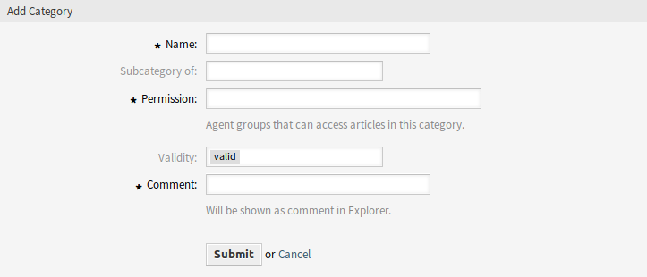

管理类别¶
注解
此菜单项仅适用于具有管理员权限的服务人员。
使用此屏幕可管理FAQ文章中提供的类别。 默认情况下，新的 OTRS 安装已包含类别。 类别管理屏幕位于 FAQ知识库 菜单的 类别管理 菜单项中。

FAQ类别管理屏幕
管理 FAQ 类别¶
若要添加一个类别：
- 点击左侧边栏的 添加类别 按钮。
- 填写必填字段。
- 点击 提交 按钮。

添加类别屏幕
若要编辑一个类别：
- 点击类别列表中的一个类别。
- 修改字段。
- 点击 提交 按钮。

编辑类别屏幕
若要删除一个类别：
- 点击类别列表中的垃圾桶图标。
- 单击确认屏幕上的 是 按钮。

删除服务目录屏幕
FAQ 类别设置¶
添加或编辑此资源时，可以使用以下设置。 标有星号的字段是必填字段。
- 名称 *
- 此资源的名称。 可以在此字段中输入任何类型的字符，包括大写字母和空格。 名称将显示在概览表中。
- 父类别是
- 可以在现有类别下添加新类别作为子类别。 这将显示为 父类别::子类别。
- 权限 *
- 能访问此类别文章的服务人员组
- 有效性
- 设置此资源的有效性。 如果此字段设置为 有效，则每个资源即可仅在 OTRS 中使用。 将此字段设置为 无效 或 临时无效 将禁止此资源的使用。
- 注释 *
- 向此资源添加其它信息。 为了更清晰，建议始终将此字段填充为带有完整句子的资源描述，因为注释也将显示在概览表中。